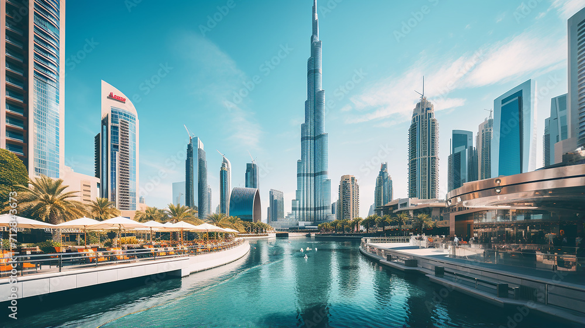
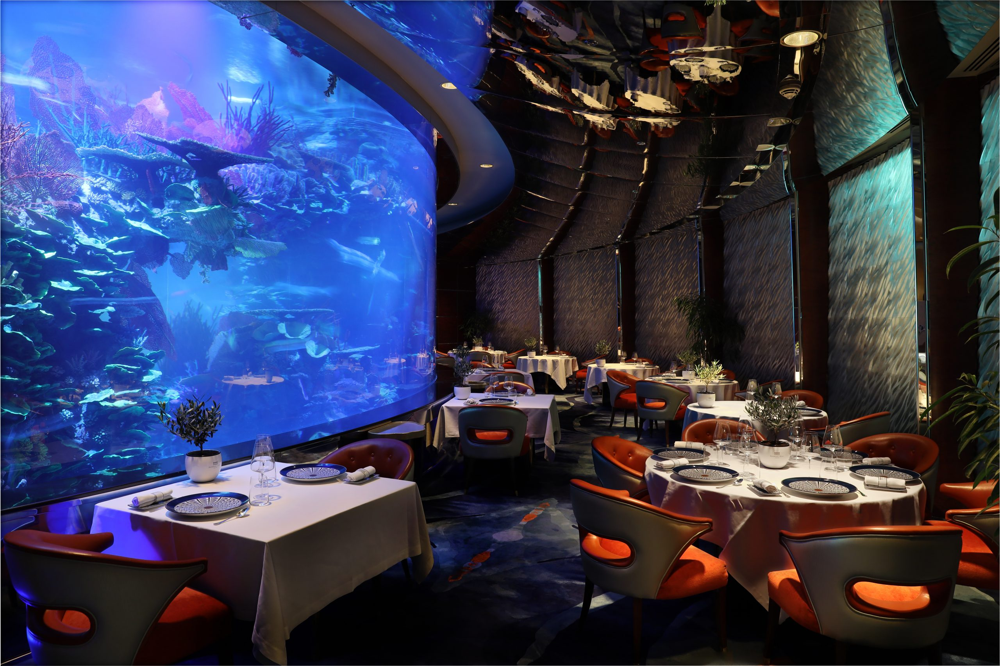
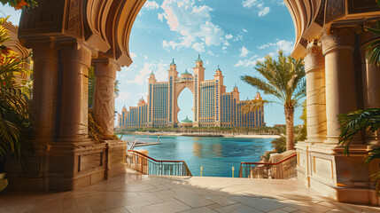
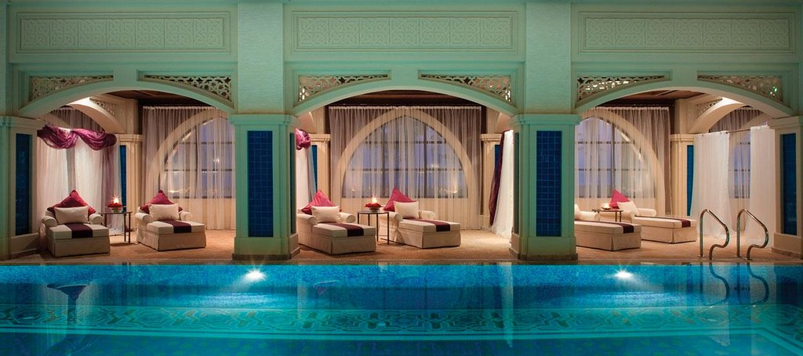

Dubai, United Emirates

Dubai by Unsplash
Dubai is a beautiful and captivating city with a dynamic atmosphere, weaving together cultural immersion and contemporary allure. The city offers an abundance of activities, including high-end shopping, fine dining, luxurious spa retreats, and five-star resorts. Its unique blend of cultural depth, leisurely delights, iconic landmarks, and cutting-edge developments positions it as an irresistible hotspot for global travelers.
Luxury Shopping: The Dubai Mall
Dubai Mall by Adobe Stock
Situated in downtown Dubai, The Dubai Mall stands as one of the most expansive shopping destinations in the UAE. A haven for shoppers, it showcases an extensive array of upscale stores including Hermes, Cartier, Christian Louboutin, and Tiffany and Co. Beyond its luxury retail offerings, the mall also provides an array of dining and entertainment options, such as the renowned Dubai ice rink and the captivating aquarium and underwater zoo.
More Recommendations for Luxury Shopping
Michelin-Starred Restaurants: Ristorante L’Olivo at Al Mahara
Ristorante L'Olivo at Al Mahara by Admin
Dubai is known for its competitive fine dining scene, with many Michelin-star restaurants like Ossiano, Indego by Vineet, and Hakkasan Dubai. With copious amounts of restaurants to choose from, Ristorante L'Olivo at Al Mahara is an iconic, go-to Michelin-star restaurant. Inspired by Dubai’s scenic oceans and Capri’s ocean heritage, the restaurant takes fine dining to a new level with an aquarium setting. The two Michelin-star restaurant delivers an extraordinary Italian cuisine, crafted by acclaimed chefs.
More Recommendations for Michelin-Star Restaurants
Five Star Hotels: Atlantis, The Palm
Atlantis, The Palm by Adobe Stock
Located on the Palm Jumeirah crescent, a world-famous man-made island, Atlantis, The Palm stands as a pinnacle of luxury and opulence in Dubai. This five-star resort offers guests a comprehensive experience, boasting stunning views of the Arabian Gulf or The Palm. With an array of 32 exquisite dining options, including the renowned Nobu Dubai and Gordan Ramsay’s Bread Street Kitchen, guests are treated to a culinary journey like no other. Moreover, the resort boasts attractions with one of the largest waterparks in the world, Aquaventure Waterpark, and the mesmerizing Lost Chambers Aquarium, housing a stunning array of over 65,000 marine creatures. To unwind, guests can indulge in rejuvenating spa treatments at the acclaimed ShuiQi Spa, ensuring a truly unforgettable stay.
More Recommendations for Five Star Hotels
Ultra-Luxurious Spa Facilities: The Talise Spa
The Talise Spa by Flickr
Located in the world-renowned Burj Al Arab, The Talise Spa presents a luxurious sanctuary to relax and rejuvenate. Situated high above the Arabian Gulf, the Talise Spa features cutting-edge amenities, including infinity pools, plunge pools, Jacuzzis, saunas, steam rooms, and exclusive separate facilities for both men and women, ensuring utmost privacy. Complementing its lavish setting, the spa offers an extensive menu of treatments and therapies, ranging from traditional massages to wellness rituals. Each experience is carefully crafted, featuring a selection of premium products such as La Prairie, QMS, Aromatherapy Associates, and Carol Joy. Combining modern wellness practices with traditional Arabian techniques, The Talise Spa is a truly luxurious and tranquil wellness experience.